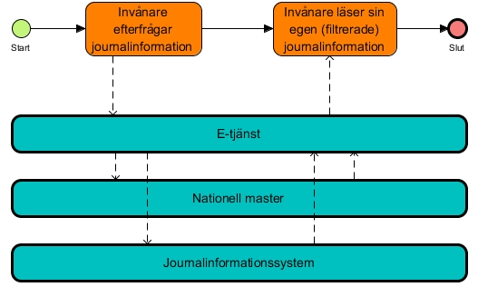
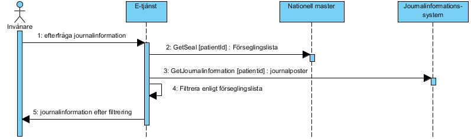

informationsecurity: authorization: pip
1.0.0-rc1.snapshot - RC
informationsecurity: authorization: pip - Local Development build (v1.0.0-rc1.snapshot) built by the FHIR (HL7® FHIR® Standard) Build Tools. See the Directory of published versions
Källa: Tjänstekontraktsbeskrivning informationsecurity: authorization: pip, version 1.0_RC1 (2017-06-28), TKB_informationsecurity_authorization_pip.docx.
Detta kapitel beskriver de flöden som är relevanta för tjänstedomänen. Beskrivningarna är i form av modeller, för varje flöde finns dels ett arbetsflöde som beskriver vilka steg som ingår i flödet och dels ett sekvensdiagram som tar hänsyn till vilka tjänstekontrakt som nyttjas i de olika stegen.
Användning av förseglingsinformation i syfte att undanhålla förseglad journalinformation från invånaren.
Invånaren har behov av att läsa sin journalinformation. Antingen görs en sökning via en e-tjänst för direktåtkomst eller så får invånaren tillgång till journalinformation via utlämnande som görs via en e-tjänst. En sökning görs därefter för att hitta journalinformation som är förseglad och som ej ska visas upp för invånaren. När sökningen är genomförd visas den filtrerade journalinformationen för invånaren. Filtreringen innebär att förseglad journalinformation ej visas för invånaren.

Flödet är internt inom e-tjänster som ska kunna förseglas. Sådan e-tjänst ska anropa den nationella tjänsteproducenten för GetSeals och sedan använda erhållen förseglingsinformation för att filtrera bort journalinformation som matchar förseglingsinformationen. Flödet beskrivs grafiskt i nedanstående sekvensdiagram.
| Namn | Beskrivning |
|---|---|
| Invånare | Person som är användare av e-tjänst. |
| E-tjänst | Tjänst som ger invånaren direktåtkomst till journalinformation (ex. Journalen) eller som lämnar ut journalinformation till invånaren (ex. API Gateway). |
| Nationell master | En nationellt adresserad tjänst som innehåller alla förseglingar (enligt principen master data management). Dvs. en nationell tjänsteproducent för tjänstekontraktet GetSeals. |
| Journalinformationsssystem | System som innehåller invånarens journalinformation. / Dvs. en tjänsteproducent för något av tjänstekontrakten för återbruk av journalinformation (ex GetMedicationHistory och GetCareDocumentation) |

Figur 1: Exempel på hur e-tjänst filtrerar förseglad information.
| Invånare begär att titta på journalinformation / E-tjänst hämtar alla gällande förseglingar genom att anropa GetSeals med invånarens personnummer. / E-tjänst hämtar efterfrågad journalinformation, t.ex vårddokumentation, vårdkontakter / E-tjänst filtrerar bort journalinformation enligt de aktiva förseglingar som finns, exempelvis all vårddokumentation där organisationsenheten i en aktiv försegling matchar organisationsenhet i vårddokumentationen. / Efter filtrering visar e-tjänsten sedan återstående journalinformation till invånaren. / Alternativt / Invånare begär att titta på journalinformation / E-tjänst hämtar alla gällande förseglingar genom att anropa GetSeals med invånarens personnummer. / E-tjänstens begäran till GetSeals timear out eller får ett transient fel. / E-tjänst visar ingen information till invånaren. | | :— |
Följande tabell specificerar vilka kontrakt som är obligatoriska att realisera för respektive flöde.
| Tjänstekontrakt | Flöde 1 |
|---|---|
| GetSeals | X |
Domänen har idag ingen generell adresseringsmodell utan respektive tjänstekontrakt har en specifik adresseringsmodell tillämpad.
Alla anrop för att hämta information om försegling är riktade mot en nationell tjänsteproducent.
Därför används Ineras HSA-id som logisk adress.
| Åtkomstbehov för etjänst | Logisk adress |
|---|---|
| Nationellt | Ineras HSA-id: 5565594230 |
Inga krav på engagemangsindex eller aggregering finns.